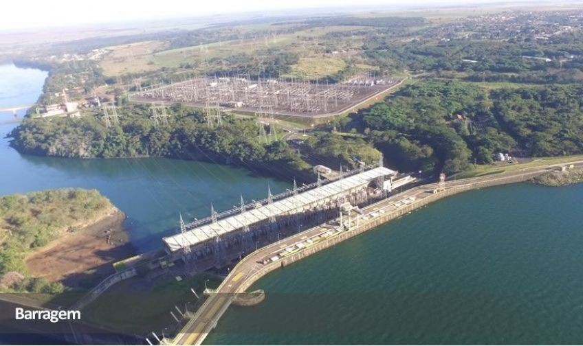
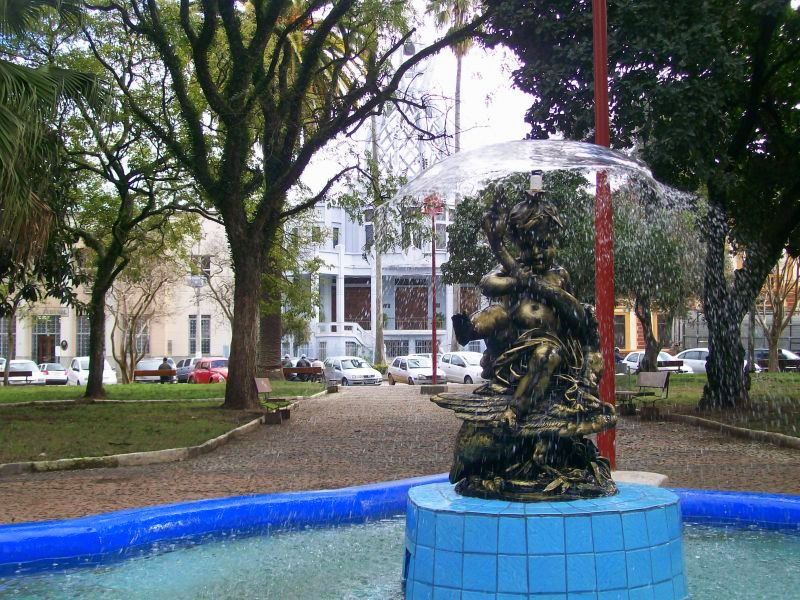
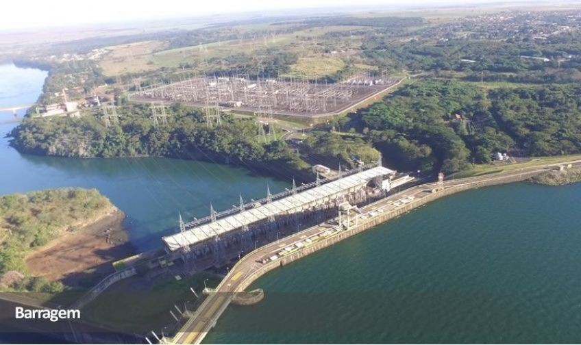
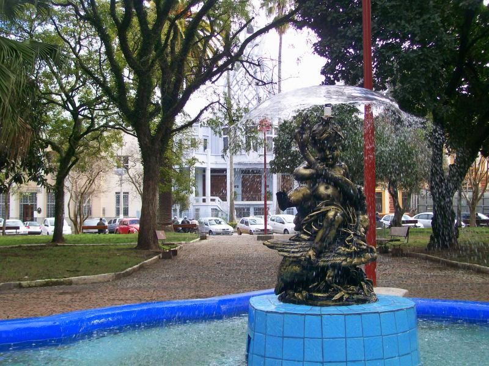

|
O Rio Grande é a principal atração natural de Fronteira. Suas águas calmas e limpas oferecem lazer para
toda a família, como banho, pesca e passeios à beira-rio. O cenário é perfeito para contemplação da
natureza e para desfrutar de um pôr-do-sol relaxante. O Náutico Clube está localizado às margens do rio,
tornando a experiência ainda mais conveniente.
Destaques: banho, pesca, caminhadas à margem, pôr-do-sol.
|
|
A Represa de Marimbondo é uma grande extensão de água que encanta pelo visual e pela tranquilidade. É
ideal para atividades ao ar livre, como pesca, passeios de barco e observação da fauna e flora locais.
Sua paisagem ampla e serena oferece ótimas oportunidades para fotos e momentos de descanso em meio à
natureza.
Destaques: pesca, passeios de barco, mirantes, contato com a natureza.
 |
|
A Praça do Coreto é o coração urbano de Fronteira, um ponto perfeito para caminhar, relaxar e apreciar a
vida da cidade. Com seu coreto central, áreas verdes e bancos sombreados, é ideal para encontros
sociais, fotos e momentos de lazer em família. Também é um bom local para experimentar comidinhas locais
ou conferir feirinhas e artesanato.
Destaques: lazer urbano, encontros sociais, fotos, gastronomia locais.
 |